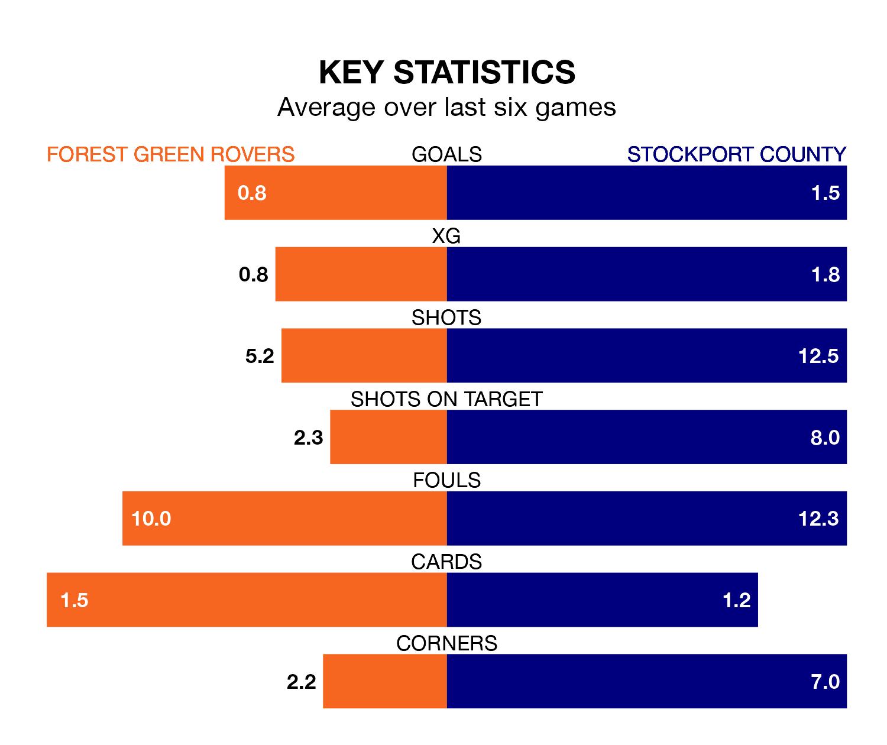

Relegation candidates Forest Green Rovers face a challenge against high-flying Stockport County at the Bolt New Lawn on Friday.
Forest Green Rovers are rooted to the bottom of the EFL League Two table, and have picked up eight wins and nine draws in their 39 games to date.
The Hatters, meanwhile, are second in the standings with 71 points, having won 20 and drawn 11 of their first 38 matches, and are two points behind table-toppers Mansfield Town.
With 75 goals in 38 games so far this season, Stockport are the league's third-highest scorers with 2.0 goals per game. And they are conceding fewer than average, letting in 40 goals at a rate of 1.1 per game.
Forest Green, meanwhile, are below average scorers, with 1.0 goal per game, compared to a league average of 1.5. They have conceded 1.7 goals per game.
In Ben Hinchiffe, County can rely on one of the league's safest pair of hands. He has kept 14 clean sheets in his 38 appearances this season, and only one other 'keeper – AFC Wimbledon's Alex Bass – has been able to prevent the opposition scoring on more occasions in EFL League Two.
In Rovers' net, James Belshaw has eight clean sheets in 29 games. He has conceded a goal every 61 minutes, 50% more often than the 90 minutes between goals for Hinchiffe.
The Green are in mixed form in EFL League Two, with two wins and a draw from their last six games.
With two wins and four draws over that period, the Hatters' form is better – they have taken 10 points from 18, compared to the hosts' seven.
Forest Green's last match was on Saturday, a 2-0 loss against Doncaster Rovers.
Stockport beat Milton Keynes Dons 5-0 last time out, also on Saturday, with Callum Camps, Connor Lemonheigh-Evans, Isaac Olaofe, Neil Byrne and Paddy Madden on the scoresheet.
Updated: 12:39 (UTC), 26/03/24